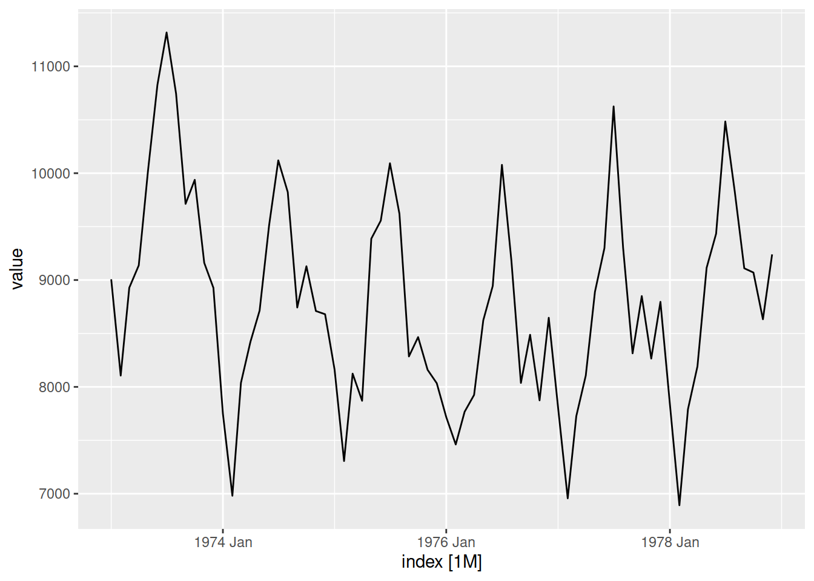
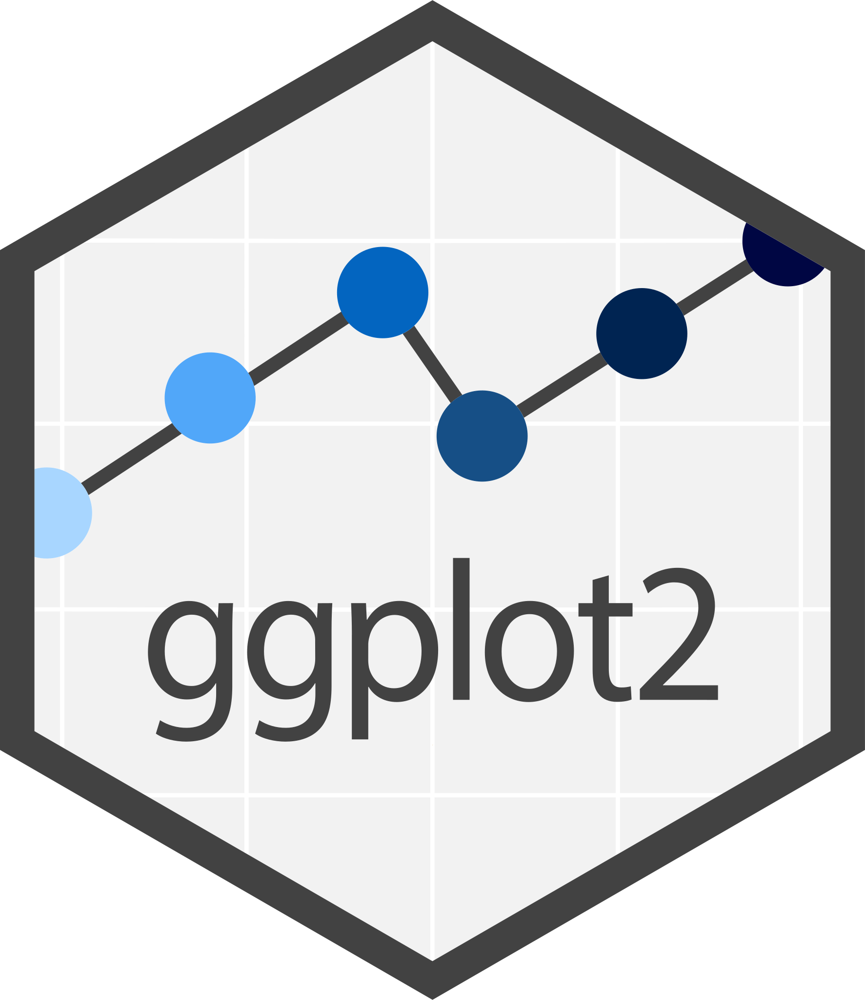
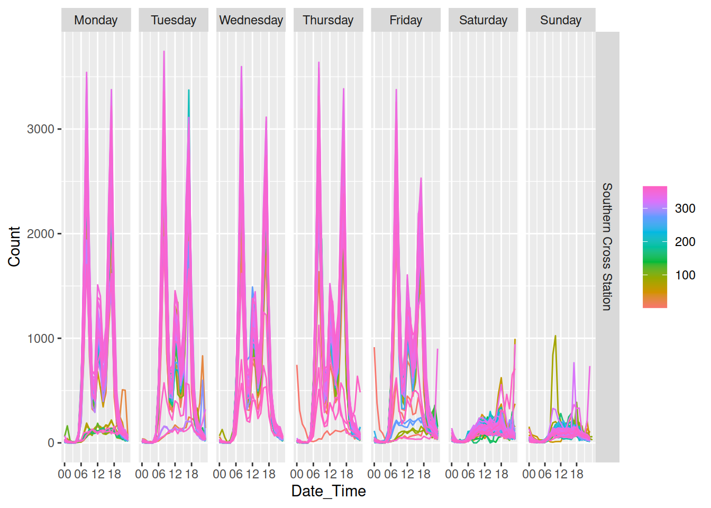
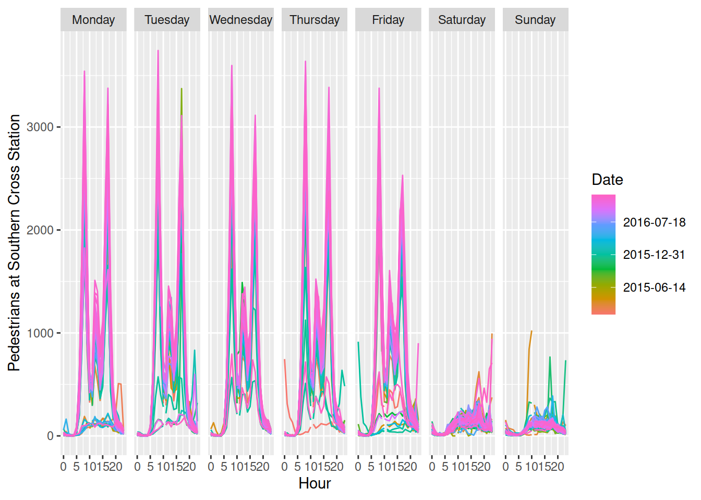
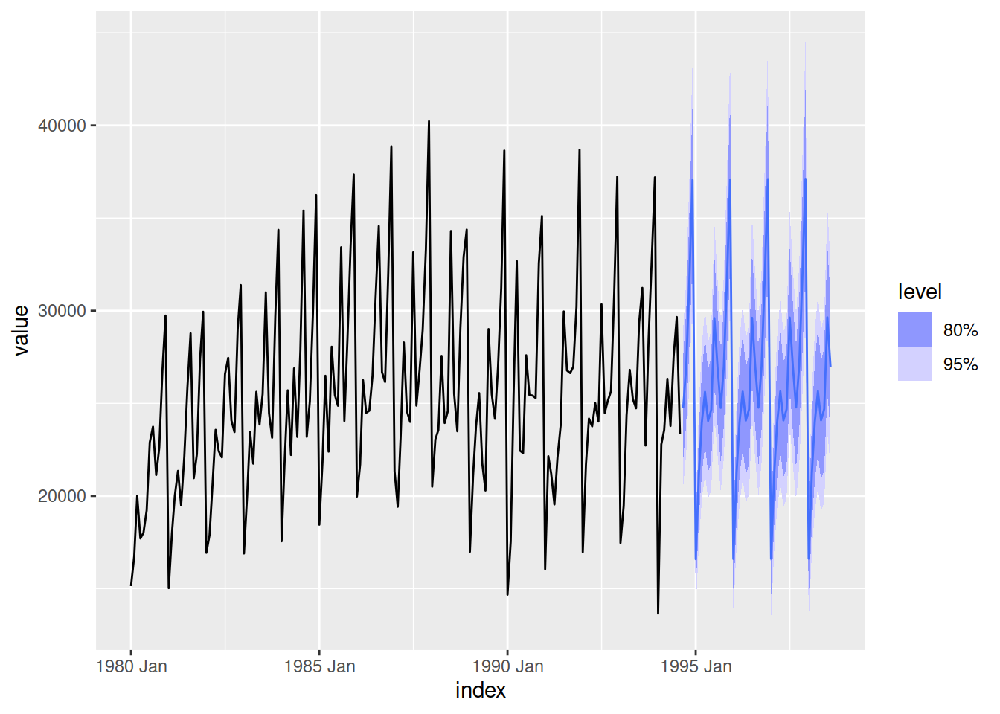
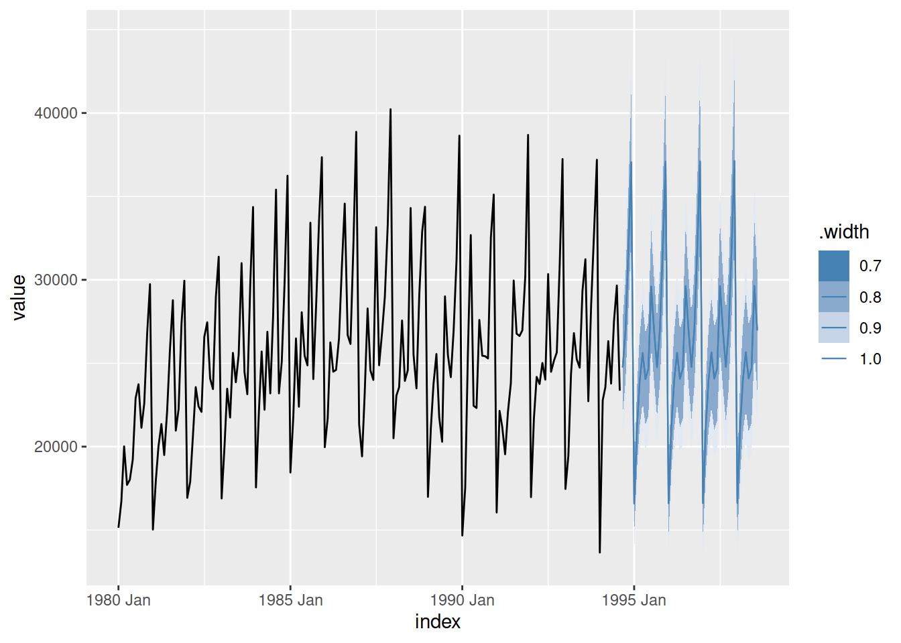
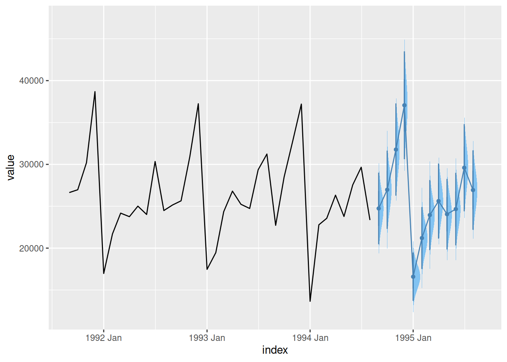

library(fable)
tsibble::as_tsibble(USAccDeaths) |>
autoplot(value)
Mitchell O’Hara-Wild
May 25, 2024
May 25, 2024

I develop many packages with functions that use ggplot2 to make a specific plot, and I’m often asked if I could add new arguments for changing the style, appearance, or layout of the plot. My answer is almost always1 a resounding no!, followed by encouragement to make the plot themselves without the plot helper function.
This outright refusal to implement easy plot improvements might surprise users and seem harsh - after all it is easy to add an argument for changing plot colours thanks to ggplot2’s grammar-based design.
Why do I refuse to make these easy improvements? It’s a matter of design.
Extension2 functions of ggplot2 can be categorised into two distinct groups:
Functions which use ggplot2 (plot helpers)
These functions produce a specific plot with a single function, useful for quickly creating a common plot for the data or analysis.
Functions which extend ggplot2 (grammar extensions)
These functions add to the plotting grammar available in ggplot2, and are highly customisable and versatile. On their own, grammar extension functions don’t produce plots but rather plot elements - plots are constructed using a combination of plot elements.
Plot helpers and ggplot2 extension functions are both useful, but serve different purposes in an analysis . The design tendency of doing too much can make these functions less useful for their purpose. In particular for ggplot2 extension packages, it is common to make plot helpers more extensible and ggplot2 extensions more helpful.
Why does this become a design problem? Read on…
Plot helper functions use many ggplot2 elements together into a simple function for creating a specific graphic. These functions abstract away the grammar of graphics, and their design should focus on what is being plotted (the data and its patterns) rather than how (the geometries, aesthetic mappings, and more).
Take for example the feasts::gg_season() function for plotting a seasonal plot of time-series data, which is commonly used in a time-series analysis to understand the shape of the seasonality (identifying peak times from throughs).
Functions like these are really useful during an analysis, allowing a quick peek at the data without needing to repeatedly write the same grammar elements (expand below) each and every time.
The handling of the x-axis wrapping and line grouping/colouring is combined/abstracted as the seasonal period. Similar plot-specific abstraction is done for faceting seasons with facet_period allowing for quick and informative plots.
fill_gaps(pedestrian) |>
dplyr::filter(Sensor == "Southern Cross Station") |>
feasts::gg_season(y = Count, period = "day", facet_period = "1 weeks")
library(ggplot2)
library(lubridate)
fill_gaps(pedestrian) |>
dplyr::filter(Sensor == "Southern Cross Station") |>
ggplot(aes(x = hour(Date_Time), y = Count, colour = as.Date(Date_Time), group = as.Date(Date_Time))) +
geom_path() +
facet_grid(cols = vars(wday(Date_Time, label = TRUE, abbr = FALSE, week_start = 1))) +
scale_color_gradientn(colours = scales::hue_pal()(9), labels = \(x) as.Date(x, origin = "1970-01-01")) +
labs(y = "Pedestrians at Southern Cross Station", x = "Hour", colour = "Date")
While useful, these plots aren’t the prettiest - they don’t try to be. Seasonal plots as shown above are unlikely to be readily suitable for wider publication, and the necessary improvements aren’t limited to the theme and style. A useful similar alternative is using box-plots rather than lines to more clearly show the typical number of pedestrians throughout the day. Creating beautiful publication ready graphics involves more than simply using a suitable chart type and variables, but also carefully considering the layout, colours, and typography3.
By not adding stylistic options to my plot helper functions, I hope to encourage users to think more creatively when constructing their visualisation. Not just using prettier colours or themes, but also creating more suitable chart types for better reader comprehension. After all, these plots are intended for experienced analysts to quickly preview important features of the data. They are aren’t intended to be readily understood by an untrained reader.
Cynthia Huang’s companion blog post Layer arguments for ggplot2 wrapper functions highlights the difficulty in creating plot helper functions which also expose the underlying grammar for further plot customisation. This design challenge is not specific to ggplot2 extensions, but more broadly applicable to any functions which abstract complexity away from underlying functions. The post offers a clever alternative that allows full plot customisation without adding countless style arguments which re-introduce complexity to an abstraction.
Contrary to plot helpers, grammar extensions are all about how something is plotted using composable visualisation elements. These extension functions directly add to the ggplot2 grammar with new geometries, statistics, coordinates, scales, themes and/or more. The key advantage of directly extending the grammar is that the added functionality can be used to create any number of plots in combination with other grammar elements (including from other extension packages).
Grammar extensions can be more difficult to implement than plot helper functions, since they involve understanding the inner workings or ggplot24 rather than simply how ggplot2 is used. Designing grammar extensions also require an understanding of how various plot elements work together. Well designed grammar extension functions are highly modular, making them compatible with other plot elements from ggplot2 and extension packages. This composable grammar-based design is what allows ggplot2 to create any number of plots by reusing grammar elements in different ways.
Grammar extensions often have the opposite design problems as plot helper functions. In attempts to be more helpful and easy to use, grammar extensions compound multiple elements of the grammar. This makes the extensions less modular and reusable in creating other plots. This is commonly seen in the design of geometries (geom_*()) and statistics (stat_*()), which are coupled together in ggplot2 as layers. An example of this is geom_histogram(), which is actually a geom_bar()5 with a stat_bin() statistic6. This helpful histogram ‘geometry’ is less reusable as a modular component in other plots, and potentially adds confusion between similar geometries. Creating histograms as binned bar charts invites thinking about other geometries which could show binned counts, or how other statistics can be used to show proportions instead of counts.
In my package design experience, I find that the best plot helpers are simple/helpful for creating a specific plot, and ggplot2 extensions are modular/flexible as a single element in a wider grammar.
When creating new plotting functions I often start with creating plot helpers, using existing ggplot2 elements and data pre-processing to construct a new plot which is somewhat complicated to create directly with ggplot2. An example of this is when I created an autoplot() function7 for the forecast package’s forecast plots.
This autoplot() method originally re-organised a forecast object into a data frame for plotting, and used a carefully constructed ribbon geometry (geom_ribbon()) to layer the forecast intervals atop one another (along with geom_line() for the point forecast).
This plot helper function met the needs for visualising forecasts for a while, but eventually came the need for visualising forecasts in different ways with different styles. Rather than adding additional arguments options for autoplot.forecast() to create completely different plots in with different visual appearance, I instead created a modular forecast geometry geom_forecast() which can be used to create any plot. I also created a forecast statistic, stat_forecast(), to also calculate forecasts by default much like geom_smooth() calculates a smooth line through the data8.
After creating geom_forecast() ggplot2 extension, I then was able to vastly simplify the plot helper’s code by using this new forecast geometry. This approach of creating both plot helpers and ggplot2 extensions allows for both:
Several incremental design and implementation improvements have been made for visualising forecasts since first creating the plot helpers and grammar extensions described above. The fable package9 for forecasting still offers the same quick and easy autoplot() function for plotting forecasts:
library(tsibble)
library(fable)
wine_tsbl <- as_tsibble(wineind)
wine_fbl <- wine_tsbl |>
model(ETS(value)) |>
forecast(h = 48)
wine_fbl |>
autoplot(wine_tsbl)
However the visualisation of forecasts is now built up with smaller and more modular components. In particular, the forecast object (a fable) is now rectangular and ready to use directly with ggplot2 and other tidy/rectangular functions.
# A fable: 48 x 4 [1M]
# Key: .model [1]
.model index value .mean
<chr> <mth> <dist> <dbl>
1 ETS(value) 1994 Sep N(24739, 4756552) 24739.
2 ETS(value) 1994 Oct N(26972, 5674061) 26972.
3 ETS(value) 1994 Nov N(31771, 7901147) 31771.
4 ETS(value) 1994 Dec N(37060, 1.1e+07) 37060.
5 ETS(value) 1995 Jan N(16590, 2169674) 16590.
6 ETS(value) 1995 Feb N(21206, 3557682) 21206.
7 ETS(value) 1995 Mar N(23948, 4553053) 23948.
8 ETS(value) 1995 Apr N(25620, 5229329) 25620.
9 ETS(value) 1995 May N(24054, 4625845) 24054.
10 ETS(value) 1995 Jun N(24662, 4880015) 24662.
# i 38 more rowsMost importantly is that the forecasts are represented with distributions (via the distributional package), which can be directly visualised with ggplot2 (via the ggdist package). The ggdist package provides several statistics (stat_*()) which allow you to use distributions in ggplot2 via the dist argument.
library(ggdist)
wine_fbl |>
ggplot(aes(x = index)) +
# Past data
geom_line(aes(y = value), data = wine_tsbl) +
# Forecasts
stat_lineribbon(aes(dist = value, fill_ramp = after_stat(.width)),
fill = "steelblue", colour = "steelblue",
linewidth = 0.4, .width = c(0.8, 0.95)) +
scale_fill_ramp_continuous(limits = c(0.7, 1), range = c(1, 0))
It is more complicated to create this plot since it requires decisions than you might expect - colours, scales, sizing and more. However thinking about visualising distributions with modular grammar components also allows you to switch out geometries to visualise forecasts differently.
head(wine_fbl, 12) |>
ggplot(aes(x = index)) +
# Past data
geom_line(aes(y = value), data = tail(wine_tsbl, 36)) +
# Forecasts
stat_halfeye(aes(dist = value), size = 0.5,
colour = "steelblue", fill = "#82c3f2") +
geom_line(aes(y = .mean), colour = "steelblue")
Visualising distributions with ggdist are not limited to forecasting, and by designing extensions to be more modular (and consequently, do less) they can be reused more widely.
While creating, learning and using grammar elements is harder than plot helper functions, they allow you to create more visually beautiful and analytically useful graphics. Good design of these grammar elements enables their reusability in making any style of plot for any purpose.
Plot helpers can’t possibly create the perfect visualisation for your analysis - and they shouldn’t try to10. Attempts to make helper functions do more make them harder to learn and use11. To keep plot helper functions simple, I refuse to add extra options for changing the style of the plot even if it is easy to do so.
The few times I have implemented these requests I later realise I shouldn’t have.↩︎
I take semantic/pedantic issue with calling functions which use ggplot2 ‘extensions’, and think this causes some design confusion among developers and users. Both function types appear in the ggplot2 official ‘extensions’ gallery, and consequently it is common for all ggplot2-related packages to be called extensions.↩︎
For more details I highly recommend this 20 minute presentation - The Glamour of Graphics by William Chase↩︎
The Extending ggplot2 vignette is a good place to start learning the ggproto extension system.↩︎
Further than that, geom_bar() is a special case of geom_rect().↩︎
This is also why we don’t have a geom_piechart(), since it would involve both a bar geometry and polar coordinate elements.↩︎
autoplot() is a ggplot2 function for creating plot helpers for a specific object class.↩︎
As mentioned earlier with geom_histogram() I think more separation between geometry and statistic is a better design than what I previously created with geom_forecast().↩︎
The tidy/rectangular successor to the forecast package.↩︎
I’m pleased to see others take on this belief in these great Stack Overflow answers: https://stackoverflow.com/questions/78512507/stop-fabletools-autoplot-from-using-color-aesthetic-for-models-when-faceting↩︎
This is especially evident in Cynthia Huang’s comparison of three calendar plot helper variants↩︎
@online{o'hara-wild2024,
author = {O’Hara-Wild, Mitchell},
title = {Why {I} Don’t Add Style Options to My Ggplot2 Functions},
date = {2024-05-25},
url = {https://mitchelloharawild.com//blog/ggplot2-package-design},
langid = {en}
}